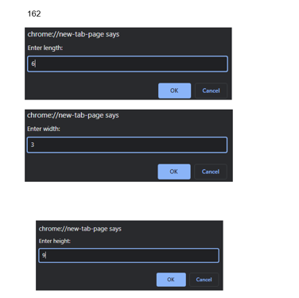
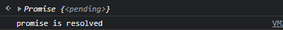

TASK1
Write a javascript function that takes length, width, and height values of rectangle from user. The function should find the volume of rectangle using the function-currying.
SOLUTION :
function curriedVolume(l) {
return (w) => {
return (h) => {
return l * w* h
}}} var length=prompt("Enter length: ");
var width=prompt("Enter width: ");
var height=prompt("Enter height: ")
console.log(curriedVolume(length)(width)(height));
OUTPUT:

TASK2
Create two functions “Profile” (outer function) and “greetingMsg” (inner function) that aims to implements the concept of Function-closure by generating an alert of greeting message with the help of user details provided in outer function.
SOLUTION :
function arrayfunc()
{
function Profile() {
var message = "Hello Mr. Smith! Hope you have a wonderful day";
function greetingMsg() {
alert(message);
}
return greetingMsg;}
var greetingMsg = Profile();
greetingMsg();
OUTPUT :
TASK3
It's a general concept in mathematics where you combine two or more functions into a brand-new function. Write a javascript program to implement the given concept with the help of function-compose for the given function. f(g(x)).
SOLUTION :
const compose = (disOnBill,Total) => tax => disOnBill(Total(tax));
const Total = (x) => x + 500 //tax
const disOnBill = (x) => x * 0.75 //25%
const BillPaid = compose(disOnBill,Total)
BillPaid(25000)
OUTPUT:
TASK4
Write a javascript program that uses filter() to create a filtered array that has all elements with values less than 10 removed.
SOLUTION :
const array = [ 1, 3, 7, 5, 11,15,17,19,21];
const filterArray = array.filter(num => num > 10);
console.log(filterArray);
OUTPUT:
TASK5
Creates an array consisting of only those elements that satisfy the condition checked by isPositive() function with the help of appropriate javascript advance loops concept.
SOLUTION :
const numbers = [175, -50, 25];
numbers.filter(myFunc);
function myFunc(num) {
return num > 0;
}
OUTPUT:
TASK6
Write a javascript program that implements the array.map() that aim to produces an array containing square roots of the numbers in the original array.
SOLUTION :
const numbers = [1, 2, 3, 4, 5];
const bigNumbers = numbers.map(number => {
return number * 10;
});
bigNumbers
OUTPUT:
TASK7
Create a class named 'Member' having the members: Name, Age, Salary. It also has a method named 'printSalary' which prints the salary of the members. Create child class 'Employee' that inherits the 'Member' class. The 'Employee' classes have data member 'department'. Now, assign name, age and salary to an employee by making an object of child class and print the same.
SOLUTION :
class Member{
constructor (name, age, salary){
this.name=name;
this.age=age;
this.salary=salary;
}
}
class Employee extends Member{
constructor(name, age, salary,department){
super(name, age,salary);
this.department=department; }
printEmpDetails(){ console.log(`The Employee details are :${this.name} , ${this.age},${this.salary},${this.department}`);}
}
const a = new Employee('ALI', 21, 25000, 'abc');
a.printEmpDetails();
OUTPUT:

TASK8
Write a javascript program to implement the concept of nullish coalesing operator by using the below object properties.
const response = {
data: {
name: 'Ronaldo',
occupation: null,
lies: 0
}
}
SOLUTION :
const response = {
data: {
name: 'Ronaldo',
occupation: null,
lies: 0
}
}
const occupation2 = response?.data?.occupation || 'no occupation' ;
console.log(occupation2);
OUTPUT:
TASK9
Write a javascript program to create the Promise that resolve in 10 seconds and check the status by returning the “Promise is resolved successfully” string if the number is even otherwise reject the promise by returning the string “Promise is rejected”. Convert this task unto async await as well and compare the results
SOLUTION :
const promise = new Promise((resolve,reject)=>{
let a =10000;
if (a%2==0)
{
setTimeout(resolve,a,'promise is resolved')
}
else{
reject('promise is rejected')
}
})
promise.then((message)=> {console.log(message);}).catch((message)=> {console.log('oops error!'+message);})
OUTPUT:

Using Async Await
async function display(){
const promise = new Promise((resolve,reject)=>{
let a =10000;
if (a%2==0)
{
setTimeout(resolve,a,'the promise is resolved')
}
else{
reject('the promise is rejected')
}
})
var response=await promise;console.log(response);
}
display();
OUTPUT: